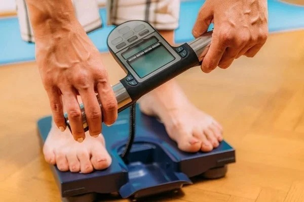
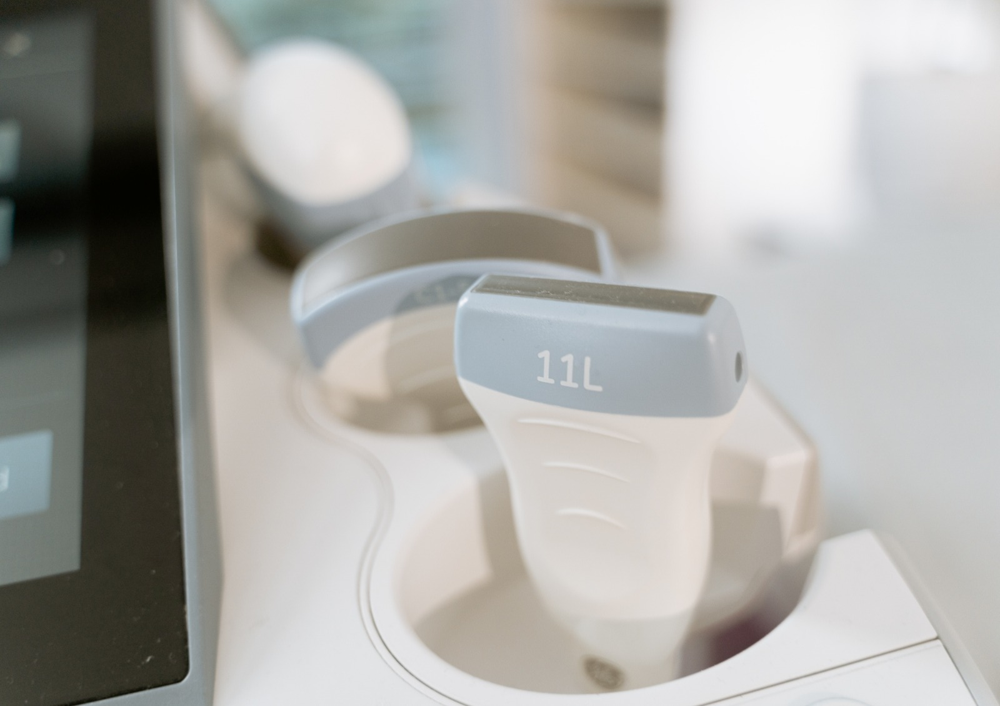

Dobras Cutâneas (Adipômetro)
Método clássico e acessível para estimar a gordura corporal através da medição de pregas cutâneas em pontos anatômicos específicos com um adipômetro calibrado.
O que avalia:

Circunferências Corporais
Medição de perímetros corporais com fita antropométrica para avaliar proporções, risco metabólico e acompanhar mudanças na composição corporal ao longo do tratamento.
O que avalia:

Bioimpedância (BIA)
Análise de composição corporal por meio de corrente elétrica de baixa intensidade, estimando massa magra, gordura corporal e água corporal total de forma rápida e não invasiva.
O que avalia:

Ultrassonografia Corporal
Avaliação de composição corporal com precisão clínica. Tecnologia de imagem que permite mensurar com exatidão cada compartimento do corpo para um plano nutricional verdadeiramente individualizado.
O que avalia:
Pronto para transformar sua saúde?
Agende sua consulta e descubra qual método de avaliação é o mais adequado para o seu momento e objetivos.
Agendar Avaliação